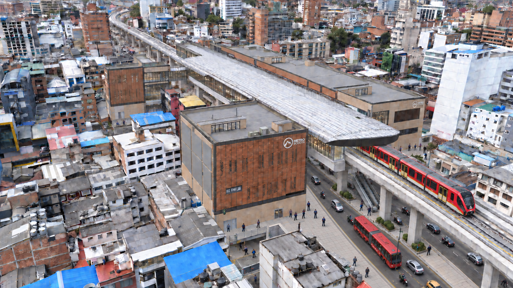
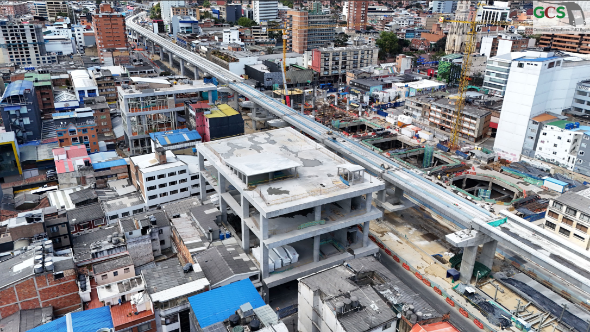

Estado de la obra al 31 de agosto de 2026
Asistente Digital
Empresa Metro de Bogotá
Avance BIM ↗
Documentos ↗
EN
Referencia
?
⛶
☁
27
°C
▥
Ocultar dashboards
Comparar E15
Tipo de comparación
Modelo IFC ↔ Render hiperrealista
Render hiperrealista ↔ Estado real
Modelo IFC ↔ Estado real
Reencuadrar
×
Modelo IFC
Transición
100 %
Render hiperrealista
⌂
Planta
Frente
Lateral
⟳
＋
−
Ⅱ
00:00
URBAN RAIL TRANSIT
Loading 3D environment
×